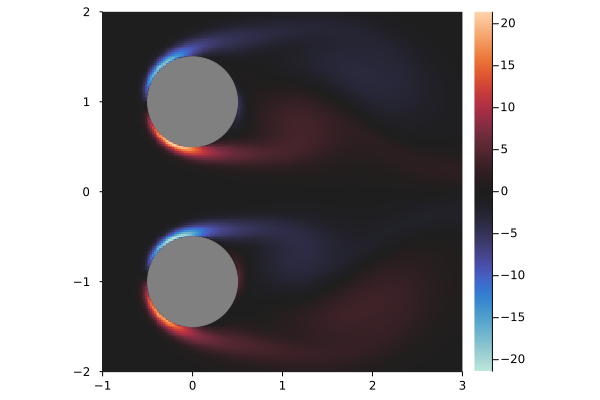

Tutorial: Double Cylinders
In this example, we will simulate the flow past two rigid cylinders. The general workflow is:
- Define the problem
- Grid
- Bodies
- Freestream velocity
- Reynold's number
- Time step
- Define callbacks
- Solve the problem
Defining the Problem
using IBPMThe first step is to define the grid.
xlim = (-1.0, 3.0) # x bounds
ylim = (-2.0, 2.0) # y bounds
dx = 0.02 # Grid step size
mg = 3 # Number of subdomains
mgrid = MultiGrid(dx, (xlim, ylim); mg=mg)MultiGrid specifies multiple grids overlayed on top of each other. The x and y limits specify the smallest grid, and each grid is twice the side length as the previous.
Next, we define the bodies. In this case, we will specify two cylinders of radius 0.5. The IBPM.Bodies module contains various default bodies, including a cylinder.
using IBPM.Bodies
r = 0.5
bodies = [
Bodies.cylinder((0.0, -1.0), r, dx)
Bodies.cylinder((0.0, +1.0), r, dx)
]To specify arbitary bodies, see RigidBody.
Then, the remaining quantities are specified and the IBProblem is constructed.
# Freestream velocity
freestream(t) = (1.0, 0.0)
Re = 100.0 # Reynolds number
dt = 0.004 # Time step size
prob = IBProblem(mgrid, bodies, freestream; Re=Re, dt=dt)The solve function solves the problem. By default, no results are displayed or returned. In order to get results, you must use a callback.
Basic Callbacks
During the simulation, the current state is stored in a IBState struct. The StateCallback type can be used to retrieve information about this state. State callbacks can be constructed with the each_timestep, at_times, or at_indices functions.
For example, to print the current simulation time at each timestep:
f(state) = println("t = ", state.t) # show the state's time
printer = each_timestep(f)Or, using Julia's do block syntax:
printer = each_timestep() do state
println("t = ", state.t) # show the state's time
endNow, you can run the simulation over the time range (0.0, 1.0) and execute the callback with:
julia> solve(prob, (0.0, 1.0); call=[printer])
t = 0.0
t = 0.004
t = 0.008
t = 0.012
t = 0.016
...
t = 0.984
t = 0.988
t = 0.992
t = 0.996
t = 1.0
()In order to run a callback at certain times, you can at_times. Note that the specified times are rounded to the nearest timestep.
printer = at_times([0.1, 0.5, 0.75]) do state
println("t = ", state.t)
endjulia> solve(prob, (0.0, 1.0); call=[printer])
t = 0.1
t = 0.5
t = 0.752
()Any amount of StateCallbacks can be passed to solve:
julia> foo = at_times([0.0, 0.5]) do state
println("foo ", state.t)
end;
julia> bar = at_times(0.2:0.1:0.7) do state
println("bar ", state.t)
end;
julia> solve(prob, (0.0, 1.0); call=[foo, bar])
foo 0.0
bar 0.2
bar 0.3
bar 0.4
foo 0.5
bar 0.5
bar 0.6
bar 0.7
()Quantities
The Quantities module provides functions to retrieve various quantities from the state. For example, the lift and drag coefficients:
using IBPM.Quantities
# Initialize lift and drag functions for the current problem
lift_coef = LiftCoef(prob)
drag_coef = DragCoef(prob)lift_coef and drag_coef are now functions of state. We can use them in a callback to display the lift and drag coefficients at various times:
printer = at_times([0.4, 0.5, 0.6]) do state
t = state.t
CL = lift_coef(state)
CD = drag_coef(state)
@show t CL CD # show the time, lift, and drag
println() # add a blank line
end;julia> solve(prob, (0.0, 1.0); call=[printer])
t = 0.4
CL = [0.15178098433850362, -0.15178098294484957]
CD = [1.9657374042287432, 1.9657374049036318]
t = 0.5
CL = [0.09809539226174821, -0.0980953807487285]
CD = [1.9616546848510217, 1.9616546911652222]
t = 0.6
CL = [0.0338480211407524, -0.03384797778806221]
CD = [1.9843193605706249, 1.9843193890137298]
()Note that lift_coef and drag_coef return arrays of values, one for each body specified.
Saving Results
Each time we called solve, it returned the empty tuple (). This is because we did not specify any quantities to save. We can specify callbacks to save with the save keyword argument. Any return values from the given StateCallbacks are aggregated during the simulation.
julia> state_time = at_times([0.0, 0.1, 0.5]) do state
return state.t
end;
julia> solve(prob, (0.0, 1.0); save=())
()
julia> solve(prob, (0.0, 1.0); save=(state_time,))
([0.0, 0.1, 0.5],)By default, the result array has element type Any. To specify the type of values returned by a callback, pass it as an additional argument:
julia> state_time = at_times([0.0, 0.1, 0.5], Float64) do state
return state.t
end;
julia> times, = solve(prob, (0.0, 1.0); save=(state_time,))
([0.0, 0.1, 0.5],)
julia> eltype(times)
Float64Using the lift_coef and drag_coef functions defined earlier, we can save the lift and drag:
get_lift = at_times(0.1:0.3:1, Float64) do state
return lift_coef(state)[1] # get the lift coefficient of the first body
end
get_drag = at_times(0.1:0.3:1, Float64) do state
return drag_coef(state)[1] # get the drag coefficient of the first body
endjulia> (CL, CD) = solve(prob, (0.0, 1.0); save=(get_lift, get_drag));
julia> CL
4-element IBPM.StateResult{Float64}:
0.24192790813515172
0.15178098433850362
-0.03935393884308133
-0.29355757293462786
julia> CD
4-element IBPM.StateResult{Float64}:
2.780251707849143
1.9657374042287432
2.017601519175688
2.105254970163017If you are saving multiple quantities, you can use a named tuple to keep track of the fields.
save = (
time=at_times(state -> state.t, [0.1, 0.2], Float64),
lift=at_times(state -> lift_coef(state)[1], [0.3, 0.4], Float64),
drag=at_times(state -> drag_coef(state)[1], [0.3, 0.4], Float64),
)julia> results = solve(prob, (0.0, 1.0); save=save)
(time = [0.1, 0.2], lift = [0.1937292945096216, 0.15178098433850362], drag = [2.0271052799736538, 1.9657374042287432])
julia> results.drag[2]
1.9657374042287432Plotting
IBPM comes with two built-in plotting recipes for the Plots package: fluidplot and bodyplot. The former is essentially a heatmap with sensible defaults, and the latter plots bodies.
using PlotsTo plot some function or array over a range of x coordinates x and y coordinates y, the syntax is:
fluidplot(x, y, f)Keyword arguments are interpreted by Plots, so you can do something like:
fluidplot(x, y, f; colorbar=false, title="foo")To plot a body, the syntax is
bodyplot(points)You can easily get points with the BodyPoints quantity from IBPM.Quantities module.
using IBPM.Quantities
vorticity = Vorticity(prob)
bodypoints = BodyPoints(prob)
T = 5.0
the_last_state = at_times(identity, [T])
(last_state,), = solve(prob, (0.0, T); save=(the_last_state,))
x = range(-1, 3, step=dx)
y = range(-2, 2, step=dx)
fluidplot(x, y, vorticity(last_state))
bodyplot!(bodypoints(last_state)) # modify the plot (!)
A simple animation can be made with Plots' Animation.
T = 15.0
anim = Animation()
save_anim = at_times(range(0, T, 150)) do state
fluidplot(x, y, vorticity(state); clims=(-5, 5), size=(512, 512))
bodyplot!(bodypoints(state))
frame(anim) # Save an animation frame
end
solve(prob, (0.0, T); call=[save_anim])
gif(anim)
Grid Quantities
By default, quantities that apply over a grid like Vorticity return interpolation functions. To get the raw arrays, specify kind=Discrete() as a keyword argument:
julia> grid_vorticity = Vorticity(prob; kind=Discrete());
julia> grid_vorticity(last_state)
199×199×3 Array{Float64, 3}:
[:, :, 1] =
1.45597e-14 … -1.41273e-14
1.4306e-14 -1.33512e-14
1.38929e-14 -1.27107e-14
⋮ ⋱
0.00363365 -0.00385906
0.00305794 -0.00338663
[:, :, 2] =
-1.10463e-14 … 1.05124e-14
-1.2348e-14 1.18209e-14
-1.19748e-14 1.14585e-14
⋮ ⋱
-1.06824e-14 1.55079e-14
-1.03108e-14 1.50663e-14
[:, :, 3] =
8.24782e-16 … -7.9071e-16
-6.53323e-16 7.31455e-16
-2.35906e-15 2.34558e-15
⋮ ⋱
9.93147e-15 -9.60593e-15
1.77592e-14 -1.81424e-14The last dimension corresponds to the 3 subdomains we specified earlier. To get the coordinates that these values apply to, see gridranges.
Next Steps
There are more examples in the examples directory of the IBPM repository. Among other things, they show how to specify moving bodies.